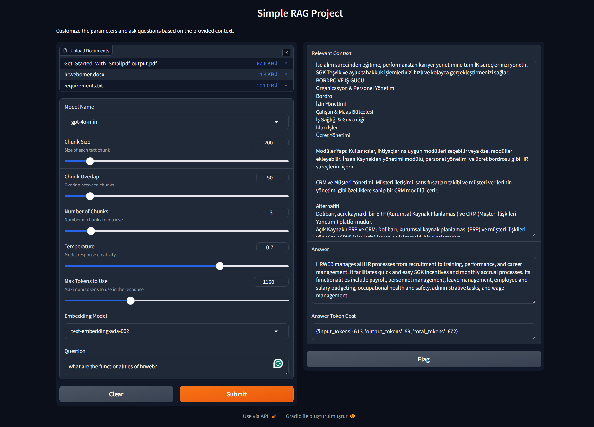
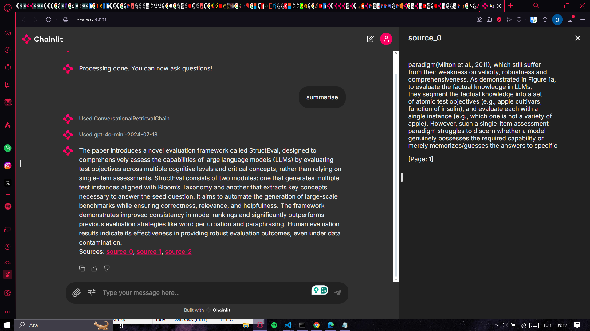
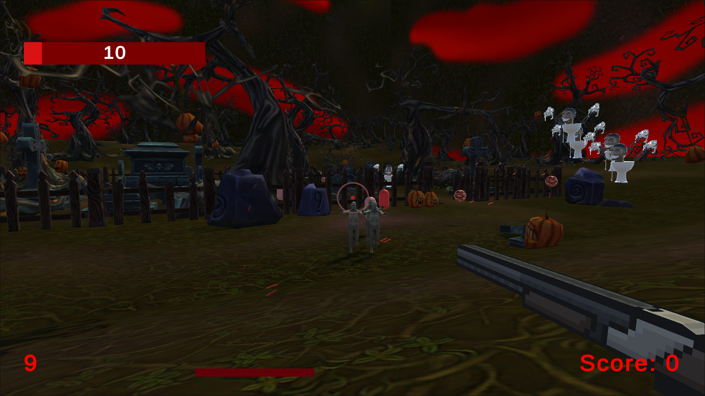
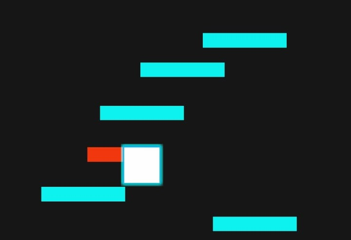

About Me
I am a computer science student passionate about AI and natural language processing. With hands-on experience in building and deploying AI-driven applications, I am always eager to explore new technologies and solve complex problems.
Projects

RAG Project With Gradio
August-September 2024
- Developed a RAG application using Python, Gradio, LangChain, OpenAI's GPT models, FAISS, and PyMuPDF.
- Implemented a Gradio-based UI for document uploading and NLP model customization.
- Optimized document handling with caching and deployed the app for interactive exploration.

Intelligent Document Processing Chatbot Using Chainlit
August-September 2024
- Developed a document processing chatbot with Python, LangChain, Chainlit, and OpenAI's GPT models.
- Implemented custom text extraction and context-aware question-answering.
- Deployed on AWS EC2 with Docker and set up CI/CD pipelines using GitHub Actions.

Combat Craze
April-May 2024
- Developed a thrilling roguelike, fast-paced movement FPS game using Unity3D, where every moment is a fight for survival.
- Designed diverse enemies such as shambling undead, explosive flying bombs, menacing aerial bombers, and relentless machine gun drones.
- Implemented a scoring system to unlock powerful perks, weapons, and upgrades, adding a strategic layer to the gameplay.

Neon Ascent
April-May 2024
- Created a 2D platformer game with pixel art aesthetics and a high-score challenge, playable on HTML5 and Android platforms.
- Released an updated Android version with improved features, leveraging player feedback to refine game mechanics.
Experience
GoLive - Intern (Full-time)
İstanbul, Turkey | August-September 2024
- Developed a fully functional RAG project using Python with LangChain, Chainlit, OpenAI API, and PyMuPDF libraries.
- Deployed the project on AWS EC2 using Docker.
- Implemented CI/CD pipelines with GitHub Actions for automated testing and deployment.